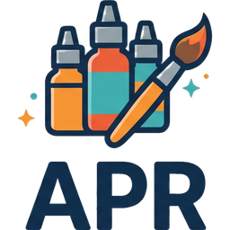

Última actualización: 2026-11-25
Aseg's Paint Rack es una app para pintores de miniaturas. Sirve para llevar en un solo sitio tus miniaturas (con fotos y progreso), tus recetas de pintura (las pinturas y los pasos que usaste), tu colección de pinturas, y para ver estadísticas y recordatorios de tu actividad. El escáner lee las etiquetas de las pinturas con la cámara, y el reconocimiento se hace en tu móvil. La app funciona entera sin cuenta; la cuenta y la copia en la nube son opcionales.
Estoy probando la app con un grupo de testers antes de publicarla en Google Play. Si quieres ayudar, estos son los pasos.
Hola, soy AsegDev. Soy desarrollador y llevaba años sin pintar; hace poco volví a coger los pinceles. Pinto muy de vez en cuando (orcos de Warhammer The Old World, Marvel Crisis Protocol y unos gnomos de Warp Miniatures) y siempre me pasa lo mismo: cuando retomo una mini no tengo ni idea de qué pinturas usé. Así que me hice una libreta de recetas.
Luego vi un vídeo de Adri y Elena, de El Daily Token, y pensé: esto, pero tipo Strava, con estadísticas de lo que pintas. Aunque no sé si quiero ver los números, porque la marea gris me gana por goleada.
Y gracias a los dos por probar la app y darme ideas durante estos meses, en los que la he ido haciendo a ratos.
Si pruebas la app, escríbeme lo que sea. Lo leo yo.
Cuando la app se lance será de pago. Pero quien esté en la beta recibirá de mi parte un código para tenerla gratis.
¡Gracias por ayudar a mejorar la app!